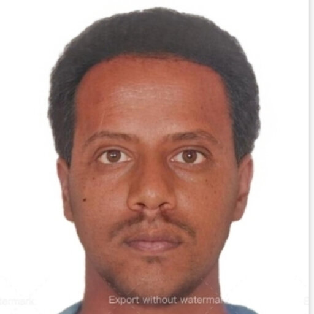

Welcome! I am Mohammed Zeinu Hassen, a lecturer of Philosophy at Addis Ababa Science and Technology University. Explore this website to learn more about my academic journey, research interests, community involvement, and leadership roles.
“Two things awe me most, the starry sky above me and the moral law within me” – Immanuel Kant